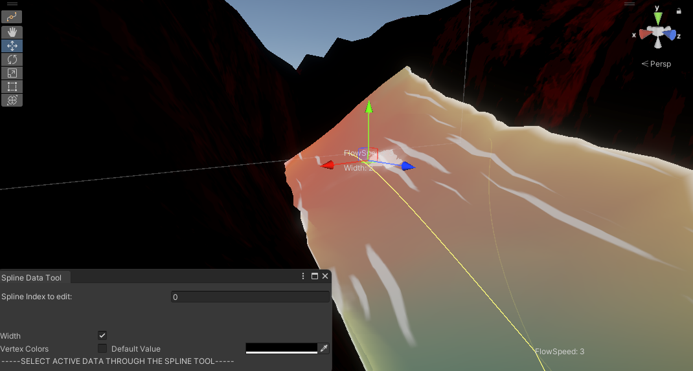

Rivers Plugin for Unity
A plugin designed for Unity, using Unity's spline package, where a river mesh would be created along the spline.
What makes this plugin special is that each spline point can be selected along the spline, and assigned unique data which is sent to both the CPU and GPU. This allows shaders/the creation of the mesh itself to do unique things, such as change the width dynamically, change flow speed between various points, or change color as you go along the stream.
This involved creating an editor tool which allowed a gizmo to be placed at each spline point, creating a struct for each one with default data, that can be changed through the Unity GUI. Upon any change, it is then serialized and pushed to the shader buffers so that the data is easily accessible within any shader if the property name is synchronized.
The normals also have to be recalculated and smoothed between each spline point for the procedural mesh generation to allow for smooth lighting per vertex, including over 90 degree turns which can cause weird visual bugs if not recalculated each time.